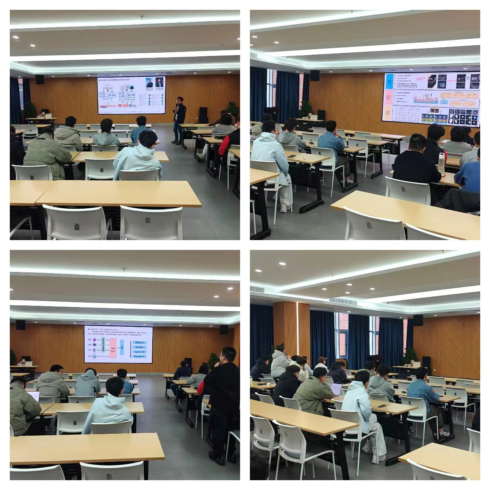
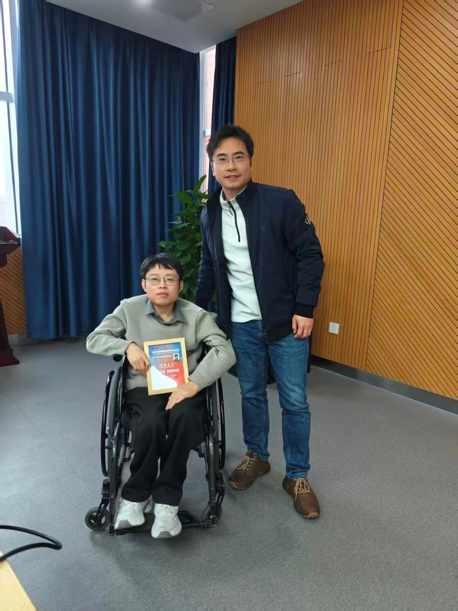

聚焦人工智能与眼科影像
---iMED中国第七十讲学术分享会
2026年3月17日上午，由中国科学院宁波材料技术与工程研究所（先进诊疗材料与技术实验室）智能医学影像团队主办的“医学图像/眼科影像专题学术分享会——iMED中国第七十讲”在慈溪园区4009办公室成功举办。本次讲座特邀深圳大学生物医学工程学院副研究员张语涵博士，作题为《基于人工智能的眼科医学影像分析》的精彩学术报告。
报告开始，赵一天研究员简要介绍了张语涵博士的学术背景。张博士于2021年获南京理工大学博士学位，并于2022年至2025年在香港中文大学完成博士后研究。其长期致力于智能医学影像、人工智能与医学大模型的研究，已在 Nature Communications、Medical Image Analysis、IEEE TMI 等顶尖期刊及国际会议上发表论文40余篇，并主持多项国家自然科学基金项目。
随着深度学习技术的飞速发展，人工智能在医学辅助诊断中展现出巨大潜力，但在实际临床应用中仍面临诸多挑战。本次报告中，张语涵博士围绕如何利用人工智能的高效性与准确性降低临床诊疗难度，重点分享了其团队在眼科医学影像分析三个核心维度的最新研究成果：
一、 医学图像诊断与筛查：突破数据与标注瓶颈
针对临床场景中普遍存在的数据标注稀缺问题，张博士详细介绍了如何通过自监督和半监督结合的模型训练来进行高效的疾病筛查，并探讨了如何使用少量数据和少量标签训练出精准的分类模型。此外，针对多疾病并发的复杂情况，报告分享了基于多标签学习的医学图像分类框架，为解决医学图像中同时存在的多种疾病问题提供了有效思路。
二、 医学图像精准量化分析：攻克病灶分割难题
在眼底图像的量化分析方面，张博士聚焦于提升模型在复杂病理条件下的表现。针对视网膜结构和病变的精准量化，报告深入探讨了如何在视网膜结构被疾病破坏时依然保证分割模型的鲁棒性，以及如何精准分割大小不一且边界模糊的病变区域。同时，为克服跨设备数据分布的差异，张博士介绍了先进的测试时域适应架构，成功解决了分割模型在测试过程中遇见未出现分布的泛化难题。
三、 医学图像纵向演化预测：生成式AI赋能前瞻性干预
讲座的第三部分聚焦于深度挖掘时间维度上的演化规律。张博士展示了团队在疾病演化预测方向的创新工作，包括如何基于图像数据预测疾病未来的发展状态以及如何基于图像预测疾病的治疗效果。在这一前瞻性领域，团队不仅构建了序列模型，还重点探讨了如何通过生成式方法直接预测未来的图像。特别是基于扩散模型（Diffusion Models）的青光眼生成式预测工作，为个性化临床干预和诊疗提供了极其重要的参考依据。
本次学术分享会内容前沿、翔实，深入浅出地展示了AI技术在眼科临床影像分析中的破局之道。会后，与会人员就跨域偏移、小样本学习以及生成式模型在医学领域的落地应用等热点问题与张语涵副研究员进行了热烈的交流与讨论。本次讲座不仅拓宽了科研人员的学术视野，也为推动先进诊疗技术的进一步发展提供了宝贵的思路。

